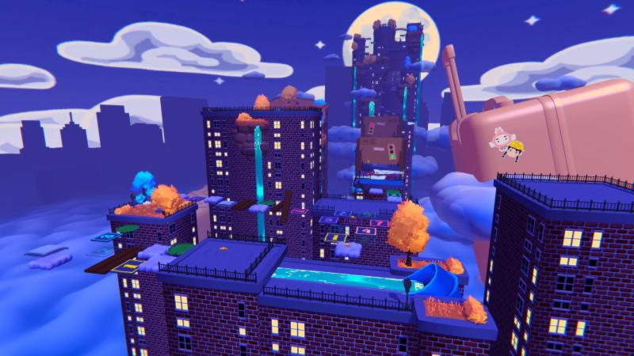

Sprouting Spirit: Dream Duo is a 3D puzzle platformer that takes you on an adventure through the fantastical world of Maple's imagination. As a new resident in the bustling city, Maple is afraid and overwhelmed and seeks solace in her own imaginary world. But alongside her new imaginary friend Cornelius, she'll learn to overcome challenges and face her fears.
In the development of Sprouting Spirit: Dream Duo, I served as a gameplay programmer as well as took on the roll of lead tools developer.
In order to create such unique and visual worlds our team put a big focus on custom internal tooling. The tool that I headed was our spline platforming tool.
This spline tool allowed for our designers to easily create and modify custom platforms and decorations in the levels.
The tool was built on top of a generalist spline package for unity that we were able to create interfaces for in the editor.
These interfaces allowed for the designers to easily create new platforms with our custom presets or convert blockout geometry into platforms easily without the need to build from scratch, as well as adjust features like spawn animations, height, borders, materials, and spacing (for bridge and fence posts).
This tool also goes above just platform generation and also generates a custom combined mesh for the platforms at runtime to increase performance and collision detection.
Almost 90% of the static platforms in game were made with this tool, as well as many level decorations such as fences and bridges